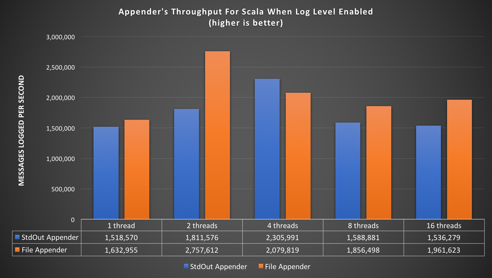
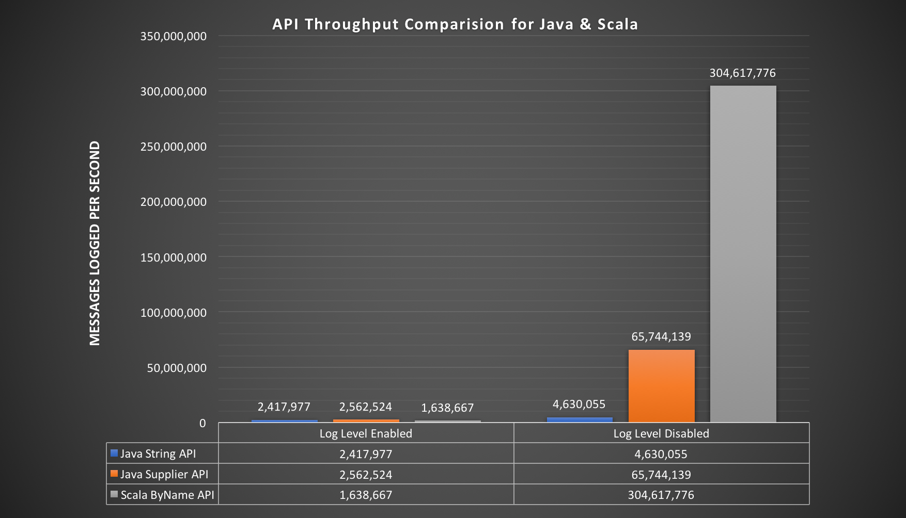

Logging Service
The Logging Service library provides an advanced logging facility for csw components and services.
With this release of CSW, only the local logging is provided. A future release will provide the centralized logging facility.
Dependencies
To use the Logging Service without using the framework, add this to your build.sbt file:
- sbt
-
libraryDependencies += "org.tmt" %% "csw-logging" % "0.5.0"
Configuration
These are the relevant default configuration values for logging
- logging.conf
-
csw-logging { # Default appender and is recommended only for dev setup. # To use multiple appenders give comma separated list of appenders. appenders = ["csw.services.logging.appenders.StdOutAppender$"] # Recommended for production setup - Uncomment below line and comment above to enable FileAppender #appenders = ["csw.services.logging.appenders.FileAppender$"] component-log-levels { # By default each compoent will use log level specified by `csw-logging.logLevel`. If required, this block allows # overriding log level configuration for one/more components. # -- Example -- # TromboneHcd = debug # TromboneAssembly = error } appender-config { file { # Include standard headers fullHeaders = true # Sort the fields in Json objects sorted = true # Directory to hold log files. logPath = "/tmp/" # Common log messages below this level are removed, none removed when set to trace logLevelLimit = trace # Flag to turn file rotation ON or OFF. Currently log file is rotated daily at 12:00 pm UTC time. By turning this flag off # file rotation will not happen. rotate = true } stdout { # Include standard headers fullHeaders = false # Use colors for log levels color = true # The maximum number of character that should be on a line # This is only a goal; in practice some may contain more characters. width = 80 # Print summary counts when logger is closed summary = true # pretty output - multiple line json pretty = false # Messages below this level are removed, none removed when set to trace logLevelLimit = trace # false Json output; true simple one line text output oneLine = false } } # If component does not specify their log level in component-log-levels block, # Then this will be considered as default log level for that component. logLevel = info # Log level for slf4j messages slf4jLogLevel = info # Log level for Akka messages akkaLogLevel = warn # Enable timing logging time = false # Enable garbage collection logging gc = false }
It is required to include logging.conf that is shipped with this library in application.conf as follows:
include "logging.conf"
Default configuration values can be then overridden in application.conf.
Also logLevel for each component can be set in application.conf as follows:
component-log-levels {
tromboneHcd = debug
tromboneAssembly = error
}
Here tromboneHcd and tromboneAssembly is the name of component that will be registered with LocationService, which is the name field in the ComponentInfo file (see DeployingComponents). By default, all components will log at level specified by csw-logging.logLevel.
The library provides StdOutAppender as default logging appender. To use FileAppender or some custom appender along-with StdOutAppender, override appenders property to include multiple appender in csv format as follows:
appenders = ["csw.services.logging.appenders.FileAppender$", "csw.services.logging.appenders.StdOutAppender$"]
Make sure to provide full path of the appender since it will be spawned using java reflection. In csw code base, a working example of custom appender can be found at: Custom Appender
For StdOutAppender specify the format of log statements in csw-logging.stdout via csw-logging.stdout.pretty and csw-logging.stdout.oneLine.
Turning pretty on or off will produce log statements in following format:
- pretty=true
-
{"@componentName":"my-component-name", "@host":"INsaloni.local", "@name":"LocationServiceExampleClient", "@severity":"INFO", "@version":"0.1", "actor": "akka.tcp://csw-examples-locationServiceClient@10.131.23.195:53618/user/$a", "class":"csw.services.location.LocationServiceExampleClient", "file":"LocationServiceExampleClientApp.scala", "line":149, "message":"Result of the find call: None", "timestamp":"2017-11-30T10:58:03.102Z" } - pretty=false
-
{"@componentName":"my-component-name","@host":"INsaloni.local","@name":"LocationServiceExampleClient","@severity":"INFO","@version":"0.1","actor":"akka.tcp://csw-examples-locationServiceClient@10.131.23.195:53618/user/$a","class":"csw.services.location.LocationServiceExampleClient","file":"LocationServiceExampleClientApp.scala","line":149,"message":"Result of the find call: None","timestamp":"2017-11-24T04:16:42.108Z"}
Similarly, turning oneLine on will produce log statements in following format:
- oneLine=true
-
[INFO] Attempting to find connection (LocationServiceExampleClientApp.scala 131)
- If
oneLineis set totruethen value ofprettywill be ignored
Log Levels
Following Log levels are supported by csw-logging library
- FATAL
- ERROR
- WARN
- INFO
- DEBUG
- TRACE
The library allows separate log levels for the logging API(logLevel), Akka logging(akkaLogLevel), and Slf4J(slf4jLogLevel). The initial values of these are set in the configuration file as seen above. These can be overriden in the application.conf file.
These values can also be changed dynamically by calling methods on LoggingSystem class.
Log Structure
All messages are logged by default as Json. Logs can contain following fields:
@componentName: The name of the component if present@host: The local host name@name: The name of the application being run@version: The version of the application being run@severity: The message level: trace, debug, info, warn, error or fatalactor: The path for an actor when using ActorLoggingclass: The class for ClassLogging or ActorLoggingfile: The file containing the log callkind: Either slf4j or akka. Not present for logger APIline: The line where the message was loggedmessage: The log messagetimestamp: The UTC time when the message was loggedtrace: Information for any exception specified in the logging call
@host,@nameand@versionwill appear in log statements only if fullHeaders is set as true in the configurationfileandlinewill appear only in log statements from Scala classes/actors. This is typical for Java logging tools, and is due to the lack of macro support in Java.
Enable Component Logging
Component developers will have an instance of LoggerFactory available from csw-framework. This instance will already have a componentName set by csw-framework which will appear in log statements against @componentName tag. Next, to get the Logger from LoggerFactory use one of the following ways:
- Scala Class
-
class SampleClass(loggerFactory: LoggerFactory) { val log: Logger = loggerFactory.getLogger } - Java Class
-
public class JSampleClass { public JSampleClass(JLoggerFactory loggerFactory) { ILogger log = loggerFactory.getLogger(getClass()); } }
- Scala Actor
-
class SampleActor(loggerFactory: LoggerFactory) extends akka.actor.Actor { //context is available from akka.actor.Actor val log: Logger = loggerFactory.getLogger(context) override def receive = ??? } - Java Actor
-
class JSampleActor extends akka.actor.AbstractActor { public JSampleActor(JLoggerFactory loggerFactory) { //context() is available from akka.actor.AbstractActor ILogger log = loggerFactory.getLogger(context(), getClass()); } @Override public Receive createReceive() { return null; } }
- Scala Typed Actor
-
class SampleTypedActor(loggerFactory: LoggerFactory, ctx: ActorContext[ComponentMessage]) { val log: Logger = loggerFactory.getLogger(ctx) } - Java Typed Actor
-
class JSampleTypedActor { public JSampleTypedActor(JLoggerFactory loggerFactory, ActorContext<ComponentMessage> ctx) { ILogger log = loggerFactory.getLogger(ctx, getClass()); } }
The LoggerFactory can be changed to JLoggerFactory by using asJava method and JLoggerFactory can be changed to LoggerFactory by using asScala method
Enable Generic Logging
In case there is a need to log statements without @componentName tag, which can be due to unavailability of componentName in some utility code, then use the GenericLoggerFactory as follows:
- Scala Class
-
class GenericClass { val log: Logger = GenericLoggerFactory.getLogger } - Java Class
-
public class JGenericClass { ILogger log = JGenericLoggerFactory.getLogger(getClass()); }
- Scala Actor
-
class GenericActor extends akka.actor.AbstractActor { //context is available from akka.actor.Actor val log: Logger = GenericLoggerFactory.getLogger(context) override def createReceive() = ??? } - Java Actor
-
class JGenericActor extends akka.actor.AbstractActor { //context() is available from akka.actor.AbstractActor ILogger log = JGenericLoggerFactory.getLogger(context(), getClass()); @Override public Receive createReceive() { return null; } }
- Scala Typed Actor
-
class GenericTypedActor(ctx: ActorContext[ComponentMessage]) { val log: Logger = GenericLoggerFactory.getLogger(ctx) } - Java Typed Actor
-
class JGenericTypedActor { public JGenericTypedActor(ActorContext<ComponentMessage> ctx) { ILogger log = JGenericLoggerFactory.getLogger(ctx, getClass()); } }
log variable is now available in scala and java classes to write log statements as explained in next segment.
Log Statements
Logging statements are used very much like existing logging services such as log4j. For Java, there is an additional way of writing log messages using Supplier methods (lambdas). The use of lambdas is more efficient since the computations in a message (e.g. string concatenation) are not performed unless the message is actually being logged. Therefore, these supplier methods should be used in cases where high performance is required (see performance results below).
A basic info statement can be written as follows:
- Scala
-
log.info(s"Result of the find call: $findResult") - Java
-
log.info("Find result: " + connectionInfo(findResult.get().connection())); - Java (Supplier)
-
log.info(() -> "Resolve result: " + connectionInfo(resolveResult.get().connection()));
The output of log statement will be:
- Scala
-
{"@componentName":"my-component-name", "@host":"INsaloni.local", "@name":"LocationServiceExampleClient", "@severity":"INFO", "@version":"0.1", "actor": "akka.tcp://csw-examples-locationServiceClient@10.131.23.195:53618/user/$a", "class":"csw.services.location.LocationServiceExampleClient", "file":"LocationServiceExampleClientApp.scala", "line":149, "message":"Result of the find call: None", "timestamp":"2017-11-30T10:58:03.102Z" } - Java
-
{"@componentName":"my-component-name", "@host":"INsaloni.local", "@name":"JLocationServiceExampleClient", "@severity":"INFO", "@version":"0.1", "actor": "akka.tcp://csw-examples-locationServiceClient@10.131.23.195:53625/user/LocationServiceExampleClient", "class":"csw.services.location.JLocationServiceExampleClient", "message":"Result of the find call : None", "timestamp":"2017-11-30T11:02:54.691Z" } - Java (Supplier)
-
{"@componentName":"my-component-name", "@host":"INsaloni.local", "@name":"JLocationServiceExampleClient", "@severity":"INFO", "actor": "akka.tcp://csw-examples-locationServiceClient@10.131.23.195:53625/user/LocationServiceExampleClient", "class":"csw.services.location.JLocationServiceExampleClient", "message": "Resolve result: LocationServiceExampleComponent-assembly-akka, component type=Assembly, connection type=AkkaType", "timestamp":"2017-07-26T19:44:58.636Z" }
The library allows usage of Map in message as follows:
- Scala
-
log.info(s"Attempting to find $exampleConnection", Map(Keys.OBS_ID → "foo_obs_id", "exampleConnection" → exampleConnection.name)) - Java
-
log.info("Attempting to find " + exampleConnection, new HashMap<String, Object>() {{ put(JKeys.OBS_ID, "foo_obs_id"); put("exampleConnection", exampleConnection.name()); }}); - Java (Supplier)
-
log.info(() -> "Attempting to resolve " + exampleConnection + " with a wait of " + waitForResolveLimit + "...", () -> { Map<String, Object> map = new HashMap<>(); map.put(JKeys.OBS_ID, "foo_obs_id"); map.put("exampleConnection", exampleConnection.name()); return map; });
The output of log statement will be:
- Scala
-
{"@componentName":"my-component-name", "@host":"INsaloni.local", "@name":"LocationServiceExampleClient", "@severity":"INFO", "@version":"0.1", "actor": "akka.tcp://csw-examples-locationServiceClient@10.131.23.195:53618/user/$a", "class":"csw.services.location.LocationServiceExampleClient", "exampleConnection":"LocationServiceExampleComponent-assembly-akka", "file":"LocationServiceExampleClientApp.scala", "line":143, "message": "Attempting to find AkkaConnection(ComponentId(LocationServiceExampleComponent,Assembly))", "obsId":"foo_obs_id", "timestamp":"2017-11-30T10:58:03.097Z" } - Java
-
{"@componentName":"my-component-name", "@host":"INsaloni.local", "@name":"JLocationServiceExampleClient", "@severity":"INFO", "@version":"0.1", "actor": "akka.tcp://csw-examples-locationServiceClient@10.131.23.195:53625/user/LocationServiceExampleClient", "class":"csw.services.location.JLocationServiceExampleClient", "exampleConnection":"LocationServiceExampleComponent-assembly-akka", "message": "Attempting to find AkkaConnection(ComponentId(LocationServiceExampleComponent,Assembly))", "obsId":"foo_obs_id", "timestamp":"2017-11-30T11:02:54.686Z" } - Java (Supplier)
-
{"@componentName":"my-component-name", "@host":"INsaloni.local", "@name":"JLocationServiceExampleClient", "@severity":"INFO", "@version":"0.1", "actor": "akka.tcp://csw-examples-locationServiceClient@10.131.23.195:53625/user/LocationServiceExampleClient", "class":"csw.services.location.JLocationServiceExampleClient", "exampleConnection":"LocationServiceExampleComponent-assembly-akka", "message": "Attempting to resolve AkkaConnection(ComponentId(LocationServiceExampleComponent,Assembly)) with a wait of 30 seconds...", "obsId":"foo_obs_id", "timestamp":"2017-11-24T04:22:02.589Z" }
The library allows you to log an error with its full stacktrace as follows:
- Scala
-
val runtimeException = new RuntimeException(s"Received unexpected message $x") log.error(runtimeException.getMessage, ex = runtimeException) - Java
-
} catch (InterruptedException | ExecutionException ex) { log.info(ex.getMessage(), ex); throw ex; } - Java (Supplier)
-
RuntimeException runtimeException = new RuntimeException("Received unexpected message " + x); log.info(() -> runtimeException.getMessage(), runtimeException);
Create LoggerFactory
This functionality is included in the framework code and users should not have to implement it themselves. Documentation is included for testing or further understanding.
In order to create a LoggerFactory with a custom componentName refer the following code:
- Scala
-
val loggerFactory: LoggerFactory = new LoggerFactory("my-component-name") // convert a scala LoggerFactory to java JLoggerFactory val jLoggerFactory: JLoggerFactory = loggerFactory.asJava - Java
-
JLoggerFactory jLoggerFactory = new JLoggerFactory("my-component-name"); // convert a java JLoggerFactory to scala LoggerFactory LoggerFactory loggerFactory = jLoggerFactory.asScala();
Create LoggingSystem
This functionality is included in the framework code and users should not have to implement it themselves. Documentation is included for testing or further understanding.
For logging statements to appear in the program, start LoggingSystem at an earliest location in an application. Also note, LoggingSystem should be started only once in an application. The name used while creating LoggingSystem will be used to create the folder and dump all logging files.
- Scala
-
private val host = InetAddress.getLocalHost.getHostName // Only call this once per application val loggingSystem: LoggingSystem = LoggingSystemFactory.start("LocationServiceExampleClient", "0.1", host, system) - Java
-
String host = InetAddress.getLocalHost().getHostName(); loggingSystem = JLoggingSystemFactory.start("JLocationServiceExampleClient", "0.1", host, actorSystem);
- The
hostnamethat is provided while creatingLoggingSystemwill appear in log statements against@hosttag
Stop LoggingSystem
This functionality is included in the framework code and users should not have to implement it themselves. Documentation is included for testing or further understanding.
Please ensure to stop LoggingSystem before application exits.
- Scala
-
// Only call this once per application Await.result(loggingSystem.stop, 30.seconds) - Java
-
// Only call this once per application loggingSystem.javaStop().get();
Source code for examples
Performance
Performance results documented on this page is measured in terms of Throughput and obtained with the JMH Java benchmark harness. Sourcecode for all the JMH benchmarks can be found here at CSW Benchmarks
Wikipedia definition of Throughput is the maximum rate of production or the maximum rate at which something can be processed. In our case, throughput is defined as how many messages can be logged in a certain period of time.
Test Machine Configuration :
- MacBook Pro (Retina, 15-inch, Mid 2015)
- Processor Name: Intel Core i7
- Processor Speed: 2.8 GHz
- No. of Processors: 1
- No. of Cores: 4
- L2 Cache (per Core): 256 KB
- L3 Cache: 6 MB
- Memory: 16 GB 1600 MHz DDR3
- JDK: 1.8.0_121
Scala Logging : Appender’s Throughput

Above graph includes the throughput results for File and StdOut appender’s using scala’s logging API. Java’s logging API throughput results are included further down this page.
As shown in the above graph, experiment was carried out for 1, 2, 4, 8 and 16 threads. That means, multiple threads are logging messages concurrently.
- Numbers indicated in the graph does not mean that those number of messages are actually written to file or console. These are the number of logging messages sent to LogActor asynchronously for the period of one second.
- It is the responsibility of LogActor to write these messages to file or console.
- LogActor uses BoundedMailbox with a mailbox-capacity = 262144, messages are dropped if mailbox gets full.
Scala And Java Logging : Throughput Comparision (Log Level Enabled vs Disabled)
Below graph depicts the throughput of Java’s logging API (String and Supplier) and scala’s logging API when log level was enabled and disabled.
- Log Level Enabled : Results are obtained for
log.infowhen default log level was set to info, that means the logging messages were sent to LogActor for writing it to file. - Log Level Disabled : Results are obtained for
log.tracewhen default log level was set to info, that means the logging messages were not written to file.

This graph is produced based on the result generated by JE2ELoggingBenchmark and E2ELoggingBenchmark
- As you can see in the above graph, Supplier version of Java log API and by name of scala API is very efficient and throughput is much higher than String version. It is recommended to use Supplier API by java developers.
Acknowledgement
The codebase in csw-logging module is based on persist-logging library. We appreciate efforts put in by authors of the persist-logging library which made our development fast and easy.